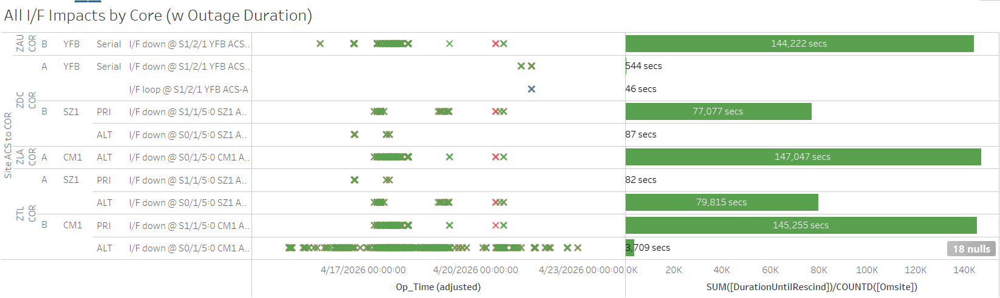

Weekly Highlights 20260415-20260422
SSM-WAAS-065 / DFO-2 Cutover Activities
SSM-WAAS-065 was released on 2/12/26 to upgrade the WAAS subsystems by performing the following hardware changes:
- Remove Legacy PCUs / Replace with new Power Distribution Units (PDUs) and DC Power Supplies (DCPS)
- Remove Legacy KVMs / Replace with new form-fit-function KVM
The DFO-2 Field Test Activities to implement limited operational capability (LOC) of L5 messaging are also being scheduled.
DFO-2 activities will be delayed...
- 4/14 15:39 - SSM-WAAS-065 - ZLA
WRE-C to Maintenance to begin upgrade to
W7.442L...
- 4/14 16:21 - ZLA WRE-A Faulted with SE 54 Rcvr Comm Fault while running cables for upgrade -- PID WRS Down; upgraded for WRE-B and WRE-A since the WRS was already offline; all WREs restored to Normal by 4/14 20:35
- 4/14 17:49 - ZLA PCU-A alarmed with SE 4 Alarm Condition 3 detected; since the PCU was replaced with the PDU, this SE will not rescind -- it may be necessary to clear this stuck event after the final O&M upgrade...
- 4/15 13:20 - SSM-WAAS-065 - ZNY all WREs to Maintenance and Shutdown for upgrade to W7.442L; all WREs restored to Normal by 4/15 17:23
| Target Cutover Date | Site | Site Type | Outage? (Y/N) |
|---|---|---|---|
| 4/14/2026 | ZLA - Los Angeles ARTCC | WRS2 | N |
| 4/16/2026 | ZNY - New York City ARTCC | WRS2 | Y |
| 4/23/2026 | ZFW - Fort Worth ARTCC | WRS2 | Y |
| 4/28/2026 | ZBW - Boston ARTCC | WRS2 | Y |
| 4/29/2026 | ZAB - Albuquerque ARTCC | WRS2 | Y |
| 5/6/2026 | ZMP - Minneapolis ARTCC | WRS2 | Y |
| 5/12/2026 | ZSU - San Juan CERAP | WRS2 | N |
| 5/19/2026 | ZDC - Washington, D.C. ARTCC | WRS2 | Y |
| 5/20/2026 | ZHU - Houston ARTCC | WRS2 | Y |
| 5/28/2026 | ZAN - Anchorage ARTCC | WRS2 | Y |
| 6/2/2026 | ZSE - Seattle ARTCC | WRS2 | Y |
| 6/9/2026 | ZKC - Kanas City ARTCC | WRS2 | Y |
- We will not take an outage at some WRS sites to avoid service area impacts.
- While at ZMA / ZBW / ZAB, we will assist the site technicians with returning a failed Frequency Standard
- Mexico sites will require rescheduling to accommodate new shipping plans...
| Site | Site Type | Upgrade Start | Upgrade Complete |
|---|---|---|---|
| POC - San Diego TRACON | OM | 2/19/2026 18:54 | 2/19/2026 21:28 |
| ZTL - Atlanta ARTCC | WMS / WCN | 2/19/2026 22:05 | 2/20/2026 2:02 |
| ZLA - Los Angeles ARTCC | WMS / WCN | 2/24/2026 16:24 | 2/24/2026 19:56 |
| ZDC - Washington, D.C. ARTCC | WMS / WCN | 2/26/2026 14:04 | 2/26/2026 19:26 |
| ZAU - Chicago ARTCC | WCN | 3/3/2026 14:15 | 3/3/2026 16:22 |
| NOC - Warrenton ATCSCC | OM | 3/3/2026 16:47 | 3/3/2026 19:21 |
| SZ1 - Santa Paula | SGS | 3/4/2026 17:08 | 3/4/2026 20:59 |
| CM1 - South Mountain | SGS | 3/5/2026 16:45 | 3/6/2026 3:04 |
| AP1 - Napa | SGS | 3/10/2026 15:15 | 3/10/2026 18:27 |
| DX1 - Southbury | SGS | 3/12/2026 13:06 | 3/12/2026 18:33 |
| BR1 - Brewster (S97A) | SGS | 3/25/2026 16:03 | 3/25/2026 21:46 |
| BR2 - Brewster (S97B) | SGS | 3/26/2026 15:54 | 3/26/2026 21:09 |
| ZOA - Oakland ARTCC | WRS2 | 3/31/2026 16:31 | 4/2/2026 18:00 |
| ZMA - Miami ARTCC | WRS2 | 4/2/2026 0:17 | 4/2/2026 5:45 |
| ZLA - Los Angeles ARTCC | WRS2 | 4/14/2026 15:39 | 4/14/2026 20:35 |
| ZNY - New York City ARTCC | WRS2 | 4/15/2026 13:20 | 4/15/2026 17:23 |
L1/L2 Bias Alarms

4/8-4/20 - ZSU WRE-B PCU Replaced
- 4/20 13:41 - ZSU WRE-B restored to
Normal without configuring PCU;
accepting SE 255 Ring 1 comm fault for PCU-B
until upgrade -- ref LAD
1131868924
- ZSU WRE-B -
3/23/26-4/20/26 - ZSU WRE-B
to Maintenance to replace PCU -- ref
LIR
1131868924...
- 4/8 17:03 - ZSU WRE-B PCU replaced and returned to Maintenance; still needs to be configured; LIR 1131868924...
- ZSU WRE-B -
3/23/26-4/20/26 - ZSU WRE-B
to Maintenance to replace PCU -- ref
LIR
1131868924...
4/11-4/17 - MTP PCU-C Alarm Condition 4 / "AC9" Down
- 4/11 20:59 - MTP PCU-C Alarm Condition 4 Detected;
reset after ~10 seconds...
- 4/11 21:03 - MTP PCU-C AC9 reports unexpected state -- this is not accurate: the Legacy PCU does not have AC9; the SNMP is sending a message that is being misinterpreted by the O&M; AC9 unexpected state cleared at 4/11 21:24 (~1200 seconds)
- 4/15 17:40 - MTP PCU-C Alarm Condition 4 Detected;
reset after ~20 seconds...
- 4/15 17:43 - MTP PCU-C AC9 reports unexpected state; AC9 unexpected state cleared at 4/15 18:04 (~1200 seconds)
- 4/16 20:55 - MTP PCU-C Alarm Condition 4 Detected;
reset at 4/16 22:38...
- 4/16 21:03 - MTP PCU-C AC9 reports unexpected state; AC9 unexpected state cleared at 4/16 22:43 (~6000 seconds)
- 4/17 19:29 - MTP PCU-C Alarm Condition 4 Detected;
reset after ~10 seconds...
- 4/17 19:33 - MTP PCU-C AC9 reports unexpected state; AC9 unexpected state cleared at 4/17 20:24 (~3000 seconds)
4/17 - ZDV Power Panel Work
- 4/17 03:42 - ZDV WRE-A to Mainenance Mode and Shutdown for power panel work -- ref LIR 1141115524; restored to Normal at 4/17 07:21
- 4/17 07:32 - ZDV WRE-B to Maintenance Mode and Shutdown for power panel work -- ref LIR 1141115824; restored to Normal at 4/17 09:57
4/17 - CM1, SZ1, and YFB Comm Events
- 4/17 06:54 - CM1, SZ1, and YFB comms flapping with
extended downs;
ISR 0417-1223 - FTI ADZ higher level issue (ISR 0417-1035)-- ref LAD 1146436524- 4/17 08:37 - CM1, SZ1, and YFB comms flapping; last events cleared at 4/17 08:46 (~277 seconds total)
- 4/17 10:13 - CM1, SZ1, and YFB comms down hard; all lines cleared at 4/17 10:17 (~248 seconds)
- 4/17 10:48 - CM1, SZ1, and YFB comms flapping; last events cleared at 4/17 11:02 (~276 seconds total)
- 4/17 11:17 - CM1, SZ1, and YFB comms down hard; lines came back up to flapping at 4/17 13:12 (~6922 seconds)...
- 4/17 13:15 - SZ1 Ring 1 ALT / Ring 2 PRI comms down hard; both lines cleared at 4/18 23:36
- 4/17 06:55 - CM1 Ring 2 ALT comms flapping; last events cleared at 4/20 07:30 (~4523 seconds total)
- 4/17 14:34 - GUS Switchover-SM9 - DX1 to Primary / SZ1 to No Data Reported; presumably comm related; SZ1 to Backup within ~15 seconds
- 4/18 00:41 - CM1, SZ1, and YFB comms down hard; lines came back up to flapping at 4/18 04:26 (~13481 seconds); down hard again at 4/18 04:43...
- 4/19 00:52 - SZ1 Ring 1 ALT / Ring 2 PRI comms down hard -- OFFLINE; both lines cleared at 4/19 01:00 (~493 seconds)
- 4/19 02:11 - SZ1 Ring 1 ALT / Ring 2 PRI comms down hard -- OFFLINE; both lines cleared at 4/19 02:29 (~1033 seconds)
- 4/19 04:35 - SZ1 Ring 1 ALT / Ring 2 PRI comms down hard -- OFFLINE; both lines cleared at 4/19 04:39 (~215 seconds)
- 4/19 06:04 - SZ1 Ring 1 ALT / Ring 2 PRI comms down hard -- OFFLINE; both lines cleared at 4/19 06:07 (~173 seconds)
- 4/19 06:57 - SZ1 Ring 1 ALT / Ring 2 PRI comms down hard -- OFFLINE; both lines cleared at 4/19 07:00 (~139 seconds)
- 4/19 07:01 - CM1, SZ1, and YFB comms cleared (~94673 seconds; lines down since 4/18)
- 4/20 12:52 - CM1, SZ1, and YFB comms down hard...
- 4/20 15:26 - SZ1 Ring 1 ALT / Ring 2 PRI comms cleared (~9251 seconds)
- 4/20 17:55 - SZ1 Ring 1 ALT / Ring 2 PRI comms down hard; both lines cleared at 4/20 17:57 (~171 seconds)
- 4/20 18:03 - CM1 Ring 1 ALT / Ring 2 PRI + YFB Ring 2 comms cleared (~18661 seconds)
- 4/20 13:04 - CM1 Ring 2 ALT comms flapping; last event cleared at 4/20 19:06 (~503 seconds total)
- 4/20 23:28 - CM1 Ring 2 ALT comms flapping; last event cleared at 4/21 03:15 (~157 seconds total)

4/18 - ZKC WRE-B Fault
- 4/18 11:31 - ZKC WRE-B Faulted with SE 54 Rcvr Comm Fault; SE 308 Process Failure Notice at 4/18 12:02; restored to Normal at 4/18 12:17
4/20 - ZKC WRE-A Power Panel Work
- 4/20 04:01 - ZKC WRE-A to Maintenance and shutdown for power work -- ref LIR 1355918032
4/22 - POC OM Recording Device Fault
- 4/22 17:48 - POC OM SE 1 Recording Device Fault; SE cleared at 4/22 17:56 (~477 seconds)
Various Comm Impacts
* Only captures major / long-term comm outages
Mexico Comms
- 4/15 04:12 - All MX Ring 1 comms down hard -- OFFLINE; all lines cleared at 4/15 04:22 (~595 seconds)
- 4/17 14:02 - MSD Ring 1 comms flapping -- OFFLINE...
- 4/22 07:51 - MTP Ring 1 comms down hard -- OFFLINE; line cleared at 4/22 08:02 (~600 seconds)
Other Sites
- 4/15 11:52 - YYR Ring 2 comms down hard; line cleared at 4/15 11:54 (~100 seconds)
- 4/15 13:02 - ZSU Ring 1 PRI / Ring 2 ALT comms down hard; both lines cleared at 4/15 13:05 (~191 seconds)
- 4/15 14:48 - CDB Ring 2 comms flapping; last event cleared at 4/15 14:59 (~284 seconds total)
- 4/15 23:15 - HNL Ring 2 ALT comms flapping; last event cleared at 4/16 02:27 (~349 seconds total)
- 4/16 18:20 - YWG Ring 1 ALT / Ring 2 PRI comms
down hard;
ISR 0416-1577-- ref LIR 276656321... - 4/17 13:55 - YYR Ring 2 comms down hard; line cleared at 4/17 18:12 (~15379 seconds)
- 4/17 16:31 - CDB Ring 2 comms down hard; line cleared at 4/17 16:45 (~823 seconds)
- 4/18 11:34 - CDB Ring 2 comms down hard; last event cleared at 4/18 11:40 (~179 seconds total)
- 4/19 10:38 - ZOA Ring 2 PRI / ALT comms down hard; both lines cleared at 4/19 10:45 (~432 seconds)
- 4/20 01:29 - ZOA Ring 1 ALT / Ring 2 PRI comms down hard; both lines cleared at 4/21 09:35 (~115527 seconds)
- 4/20 04:12 - ZOA Ring 1 PRI / Ring 2 ALT comms down hard -- OFFLINE; both lines cleared at 4/20 06:47 (~9310 seconds)
- 4/21 05:19 - YYR Ring 1 + YFB Ring 1 comms down hard; both lines cleared at 4/21 05:26 (~408 seconds)
- 4/21 09:37 - ZOA Ring 1 ALT / Ring 2 PRI comms flapping; last events cleared at 4/21 09:39 (~75 seconds total)
- 4/21 12:02 - YYR Ring 1 + YFB Ring 1 comms down hard; both lines cleared after loopback at 4/21 12:05 (~134 seconds)
- 4/22 06:40 - ZSU Ring 1 ALT / Ring 2 PRI comms down hard; both lines cleared at 4/22 06:51 (~681 seconds)
- 4/22 07:31 - DX1 Ring 1 PRI / Ring 2 ALT comms flapping; both lines cleared at 4/22 07:49 (~115 seconds total)
- 4/22 09:21 - ZSU Ring 1 ALT / Ring 2 PRI comms down hard; both lines cleared at 4/22 09:24 (~229 seconds)
4/17/26 MSD Ring 1 Comms Flapping
AT&T TKT # 642001071
-- ref LIR
1147521124
- 4/17 14:02 - MSD Ring 1 comms flapping -- OFFLINE...
4/16/26 YWG Comms Down Hard
- 4/16 18:20 - YWG Ring 1 ALT / Ring 2 PRI
comms down hard;
ISR 0416-1577-- ref LIR 276656321...
5/11/23 Mexico Ring 2 Down Hard...
- 5/11/23 17:01 - MX Ring 2 SatCom upgrade begins; MX Ring 2 OFFLINE until upgrade troubleshooting is complete...
- Targeting network upgrade in CY26
- 3/12/26 Disconnect order
List of current offline WREs
List of current offline WREs -- ref WAAS Status Monitor
All Depot shipments to Mexico are halted until the customs process can be finalized
Currently working to assess MX Inventory to determine equipment refresh and restoration needs...
- YYR WRE-B - 4/6/26-... - YYR WRE-B PCU (fresh spare) has repeating Alarm Condition 2 and 3 -- ref LIR 272498021
- MMX WRE-C - 3/20/26-...
- MMX WRE-C to Maintenance and Restarted;
Receiver inits failing... unable to restore --
ref LIR
1133124724...
- 3/23 16:34 - MMX WRE-C Control Powered OFF until repair...
- MMD WRE-C - 10/20/25-... - Good Freq Std swapped into WRE-A to restore -- ref LIR 211505621
- MTP WRE-A - 9/23/25-...
- PCU Failed after power outage; PCU-B swapped
into WRE-A but DC output is non-functional...
ref LAD
1060696524
- Planning to swap PCU-C into WRE-A -- this will remove WRE-C from service, but allow us to restore WRE-A for analysis
- MTP WRE-B - 11/18/24-... - Receiver inits failing due to no DC Power from PCU; PCU swapped with PCU-A after PCU-A failed -- ref LIR 898330924
- MPR WRE-B - 5/3/24-... - Inits failing -- looks like a bad freq std; due to shipping issues, there is no spare Freq Std and no ETA to recover WRE-B... -- ref LIR 44170821

Major Events


Core I/F Status

Comm Events

Mexico Comm Status


Weekly Highlights 20260408-20260415
SSM-WAAS-065 / DFO-2 Cutover Activities
SSM-WAAS-065 was released on 2/12/26 to upgrade the WAAS subsystems by performing the following hardware changes:
- Remove Legacy PCUs / Replace with new Power Distribution Units (PDUs) and DC Power Supplies (DCPS)
- Remove Legacy KVMs / Replace with new form-fit-function KVM
The DFO-2 Field Test Activities to implement limited operational capability (LOC) of L5 messaging are also being scheduled.
DFO-2 activities will be delayed...
- 4/14 15:39 - SSM-WAAS-065 - ZLA
WRE-C to Maintenance to begin upgrade to
W7.442L...
- 4/14 16:21 - ZLA WRE-A Faulted with SE 54 Rcvr Comm Fault while running cables for upgrade -- PID WRS Down; upgraded for WRE-B and WRE-A since the WRS was already offline; all WREs restored to Normal by 4/14 20:35
- 4/14 17:49 - ZLA PCU-A alarmed with SE 4 Alarm Condition 3 detected; since the PCU was replaced with the PDU, this SE will not rescind -- it may be necessary to clear this stuck event after the final O&M upgrade...
- 4/15 13:20 - SSM-WAAS-065 - ZNY all WREs to Maintenance and Shutdown for upgrade to W7.442L; all WREs restored to Normal by 4/15 17:23
| Target Cutover Date | Site | Site Type | Outage? (Y/N) |
|---|---|---|---|
| 4/14/2026 | ZLA - Los Angeles ARTCC | WRS2 | N |
| 4/16/2026 | ZNY - New York City ARTCC | WRS2 | Y |
| 4/28/2026 | ZBW - Boston ARTCC | WRS2 | Y |
| 4/29/2026 | ZAB - Albuquerque ARTCC | WRS2 | Y |
| 5/5/2026 | ZFW - Fort Worth ARTCC | WRS2 | Y |
| 5/6/2026 | ZMP - Minneapolis ARTCC | WRS2 | Y |
| 5/12/2026 | ZSU - San Juan CERAP | WRS2 | N |
| 5/19/2026 | ZDC - Washington, D.C. ARTCC | WRS2 | Y |
| 5/20/2026 | ZHU - Houston ARTCC | WRS2 | Y |
| 5/28/2026 | ZAN - Anchorage ARTCC | WRS2 | Y |
| 6/2/2026 | ZSE - Seattle ARTCC | WRS2 | Y |
| 6/9/2026 | ZKC - Kanas City ARTCC | WRS2 | Y |
- We will not take an outage at some WRS sites to avoid service area impacts.
- While at ZMA / ZBW / ZAB, we will assist the site technicians with returning a failed Frequency Standard
- Mexico sites will require rescheduling to accommodate new shipping plans...
| Site | Site Type | Upgrade Start | Upgrade Complete |
|---|---|---|---|
| POC - San Diego TRACON | OM | 2/19/2026 18:54 | 2/19/2026 21:28 |
| ZTL - Atlanta ARTCC | WMS / WCN | 2/19/2026 22:05 | 2/20/2026 2:02 |
| ZLA - Los Angeles ARTCC | WMS / WCN | 2/24/2026 16:24 | 2/24/2026 19:56 |
| ZDC - Washington, D.C. ARTCC | WMS / WCN | 2/26/2026 14:04 | 2/26/2026 19:26 |
| ZAU - Chicago ARTCC | WCN | 3/3/2026 14:15 | 3/3/2026 16:22 |
| NOC - Warrenton ATCSCC | OM | 3/3/2026 16:47 | 3/3/2026 19:21 |
| SZ1 - Santa Paula | SGS | 3/4/2026 17:08 | 3/4/2026 20:59 |
| CM1 - South Mountain | SGS | 3/5/2026 16:45 | 3/6/2026 3:04 |
| AP1 - Napa | SGS | 3/10/2026 15:15 | 3/10/2026 18:27 |
| DX1 - Southbury | SGS | 3/12/2026 13:06 | 3/12/2026 18:33 |
| BR1 - Brewster (S97A) | SGS | 3/25/2026 16:03 | 3/25/2026 21:46 |
| BR2 - Brewster (S97B) | SGS | 3/26/2026 15:54 | 3/26/2026 21:09 |
| ZOA - Oakland ARTCC | WRS2 | 3/31/2026 16:31 | 4/2/2026 18:00 |
| ZMA - Miami ARTCC | WRS2 | 4/2/2026 0:17 | 4/2/2026 5:45 |
| ZLA - Los Angeles ARTCC | WRS2 | 4/14/2026 15:39 | 4/14/2026 20:35 |
| ZNY - New York City ARTCC | WRS2 | 4/15/2026 13:20 | 4/15/2026 17:23 |
L1/L2 Bias Alarms

4/8 - DX1 GUS Fault - C5 Upconverter Failed
- 4/8 10:53 - DX1 GUS Faulted from Backup with SE
194 C5 Up-converter Failure and other RFU SEs;
advised that the online C5 up-converter is bad with no power and the backup up-converter is now online-- ref LCM 273642921; Control Powered and restored to Backup at 4/8 17:16
4/8 - ZSU WRE-B PCU Replaced
- 4/8 17:03 - ZSU WRE-B PCU replaced and returned to Maintenance; still needs to be configured; LIR 1131868924...
4/10 - ZDV WRE-C Down for Power Panel Work
- 4/10 03:45 - ZDV WRE-C to Maintenance and Shutdown
for
ZDV WRE-C Power project. To replace old ASCO switches to ATS switches.; more outages planned for other WREs in coming days -- ref LIR 1141114824; restored to Normal at 4/10 08:16
4/10 - GUS Tap Tool Port Resets
- 4/10 19:56 - BR1 GUS TAP-A/B Tool Port reset -- SxS updates
- 4/10 22:06 - All GUS Taps Tool Port reset -- SxS updates
4/13 - ZOA PDU-1 Comm Faults
- 4/13 19:01 - ZOA PDU-1 alarmed with SE 254 PDU
Ring 2 Comm Fault -- ref LIR
1144194524
- 4/13 19:38 - ZOA ACS-B Control Powered OFF/ON; cleared after power cycle.
- 4/13 21:31 - ZOA PDU-1 alarmed with SE 254 PDU
Ring 2 Comm Fault -- ref LIR
1144224424
- 4/13 22:37 - ZOA ACS-B Control Powered OFF/ON; did not clear
- 4/13 23:39 - ZOA technician wiggled comm cable on front panel of PDU and comm fault cleared (1 hr 26 min down)
Various Comm Impacts
* Only captures major / long-term comm outages
Mexico Comms
- 4/7 07:51 - MPR Ring 1 comms flapping;
AT&T #640701251-- ref LIR 1142030924; last event cleared at 4/9 05:01 (~116710 seconds total) - 4/9 23:51 - MSD Ring 1 comms down hard -- OFFLINE; line cleared at 4/10 00:01 (~599 seconds)
- 4/11 10:41 - MSD Ring 1 comms flapping -- OFFLINE; last event cleared at 4/11 11:11 (~1191 seconds total)
- 4/13 15:21 - MTP Ring 1 comms down hard -- OFFLINE; line cleared at 4/13 20:02 (~16796 seconds)
- 4/15 04:12 - All MX Ring 1 comms down hard -- OFFLINE; all lines cleared at 4/15 04:22 (~595 seconds)
OTZ Comms
- 4/8 15:35 - OTZ Ring 1 / Ring 2 all comms down hard; all lines cleared at 4/8 15:37 (~131 seconds)
- 4/9 23:23 - OTZ Ring 1 PRI / Ring 2 ALT comms flapping until down hard at 4/9 23:24; line came back up to flapping at 4/10 06:38 (~26058 seconds); last events cleared at 4/10 07:10 (~1749 seconds total)
- 4/9 23:54 - OTZ Ring 1 ALT / Ring 2 PRI comms flapping until down hard at 4/10 00:02; line came back up to flapping at 4/10 02:58 (~10552 seconds); last events cleared at 4/10 03:12 (~855 seconds total)
- 4/10 07:57 - OTZ Ring 1 PRI / Ring 2 ALT comms flapping; last events cleared at 4/10 08:15 (~255 seconds total)
- 4/10 09:48 - OTZ Ring 1 ALT / Ring 2 PRI comms down hard; both lines cleared at 4/10 17:31 (~27747 seconds)
- 4/14 07:01 - OTZ Ring 1 PRI / Ring 2 ALT comms down hard; both lines cleared at 4/14 07:02 (~84 seconds)
- 4/14 07:04 - OTZ Ring 1 PRI / Ring 2 ALT comms down hard; both lines cleared at 4/14 07:05 (~56 seconds)
CM1 Comms
- 4/8 17:41 - CM1 Ring 2 ALT comms flapping until down hard at 4/8 18:03; line cleared at 4/8 18:25 (~3737 seconds total)
- 4/13 20:01 - CM1 Ring 2 ALT comms flapping; last event cleared at 4/13 20:05 (~249 seconds total)
AP1 Comms
- 4/9 15:58 - AP1 Ring 1 ALT / Ring 2 PRI comms down
hard;
ISR 0409-1362 - rprts T-1 circuit down-- ref LIR 273964621...- 4/9 19:59 - AP1 Ring 1 ALT / Ring 2 PRI comms cleared momentarily (~14446 seconds), then down hard again at 4/9 20:01...
- 4/9 20:32 - AP1 Ring 1 ALT / Ring 2 PRI comms cleared momentarily (~1896 seconds), then down hard again at 4/9 20:36...
- 4/10 18:54 - AP1 Ring 1 ALT / Ring 2 PRI comms cleared (~80243 seconds)
Other Sites
- 4/9 17:03 - SZ1 Ring 1 PRI comms flapping;
last event cleared at 4/9 17:50 (~900
seconds total)
- 4/9 17:13 - SZ1 Ring 2 ALT comms down hard; line cleared at 4/9 18:28 (~4524 seconds)
- 4/9 22:49 - CDB Ring 2 comms flapping until down hard at 4/9 22:57 -- OFFLINE; line cleared at 4/9 23:29 (~1905 seconds total)
- 4/9 23:46 - CDB Ring 2 comms down hard -- OFFLINE; line cleared at 4/10 00:05 (~1184 seconds)
- 4/10 04:42 - BET Ring 1 ALT / Ring 2 PRI comms flapping; last events cleared at 4/10 10:55 (~3363 seconds total)
- 4/12 20:10 - CDB Ring 2 comms down hard -- OFFLINE; line cleared at 4/12 20:49 (~2375 seconds)
- 4/14 03:35 - YWG Ring 1 ALT / Ring 2 PRI comms down hard; both lines cleared at 4/14 04:22 (~2827 seconds)
- 4/15 11:52 - YYR Ring 2 comms down hard; line cleared at 4/15 11:54 (~100 seconds)
- 4/15 13:02 - ZSU Ring 1 PRI / Ring 2 ALT comms down hard; both lines cleared at 4/15 13:05 (~191 seconds)
- 4/15 14:48 - CDB Ring 2 comms flapping; last event cleared at 4/15 14:59 (~284 seconds total)
4/7/26-4/9/26 MPR Ring 1 Comms Flapping
- 4/7 07:51 - MPR Ring 1 comms flapping;
AT&T #640701251-- ref LIR 1142030924... - 4/9 05:01 - Last MPR Ring 1 comm event cleared (~179861 seconds total; flapping since 4/7)
5/11/23 Mexico Ring 2 Down Hard...
- 5/11/23 17:01 - MX Ring 2 SatCom upgrade begins; MX Ring 2 OFFLINE until upgrade troubleshooting is complete...
- Targeting network upgrade in CY26
- 3/12/26 Disconnect order
List of current offline WREs
List of current offline WREs -- ref WAAS Status Monitor
All Depot shipments to Mexico are halted until the customs process can be finalized
Currently working to assess MX Inventory to determine equipment refresh and restoration needs...
- YYR WRE-B - 4/6/26-... - YYR WRE-B PCU (fresh spare) has repeating Alarm Condition 2 and 3 -- ref LIR 272498021
- ZSU WRE-B - 3/23/26-... - ZSU WRE-B to Maintenance to replace PCU -- ref LIR 1131868924...
- MMX WRE-C - 3/20/26-...
- MMX WRE-C to Maintenance and Restarted;
Receiver inits failing... unable to restore --
ref LIR
1133124724...
- 3/23 16:34 - MMX WRE-C Control Powered OFF until repair...
- MMD WRE-C - 10/20/25-... - Good Freq Std swapped into WRE-A to restore -- ref LIR 211505621
- MTP WRE-A - 9/23/25-...
- PCU Failed after power outage; PCU-B swapped
into WRE-A but DC output is non-functional...
ref LAD
1060696524
- Planning to swap PCU-C into WRE-A -- this will remove WRE-C from service, but allow us to restore WRE-A for analysis
- MTP WRE-B - 11/18/24-... - Receiver inits failing due to no DC Power from PCU; PCU swapped with PCU-A after PCU-A failed -- ref LIR 898330924
- MPR WRE-B - 5/3/24-... - Inits failing -- looks like a bad freq std; due to shipping issues, there is no spare Freq Std and no ETA to recover WRE-B... -- ref LIR 44170821

Major Events


Core I/F Status

Comm Events

Mexico Comm Status